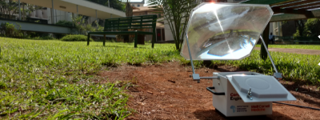
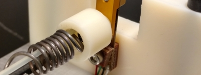

Ryan Snodgrass
PhD Candidate
|

|
NSF Graduate Research Fellow |
|
rjs492@cornell.edu |
|

Site pages
Hi! I am a mechanical engineer at Cornell University.
I will graduate with a PhD in 2019. I’m looking for interesting new projects to pursue - please contact me with opportunities at rjs492@cornell.edu
I hope the following information gives you a better idea of how I am qualified for a variety of engineering projects. I’ve tried to include descriptions on each image - just click on them!
I love building things!
Some things I've built:
At Cornell, I was fortunate enough to be awarded a NSF Graduate Research Fellowship, which gave me the flexibility to research a variety of interesting topics. Generally, my research has focused on thermal systems. Click on the images below for more information on each of my recent projects.
Solar thermal diagnostic system (TINY)


Heat-driven shape memory actuators

Some places I've worked:
I have a variety of professional experiences, both in industry and at universities. I am a talented engineer and an adept research scientist.
I worked with robotics at both Honda and Dow AgroSciences. It’s harder for me to showcase my work from this topic because of IP limitations; however, I’d be happy to discuss my expertise in this field. I have experience with Motoman and EPSON 6-axis robots, vision algorithms for control, and process control for manufacturing.
- Honda Engineering North America
- Dow AgroSciences
- Cornell University
- IMTEK, University of Freiburg, Baden-Württemberg, Germany
- Ohio State University
Some of my talents:


{kind=link}
{kind=link}
{kind=link}
{kind=link}
{kind=link}
{kind=link}
{kind=link}
{kind=link}
{kind=link}
{kind=link}
Some of my interests (incomplete list):
- Energy
- Refrigeration (especially solid state)
- Automation
- Actuators (especially shape memory)
- Portable devices
- Design and manufacturing (both mechanical/electrical)
- Sensors/measurement
- Mechanisms
- Any engineering topic that is cutting-edge, unusual, innovative
Some of my hobbies:
I am a very self-motivated individual, and my work is important to me. It’s easy for me to do my work because it’s fun! However, I also have a variety of hobbies, and I value a balanced lifestyle.
- Camping
- Hiking
- Basketball
- Running
- Rock climbing
{kind=link}
{kind=link}
{kind=link}